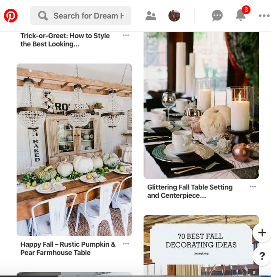
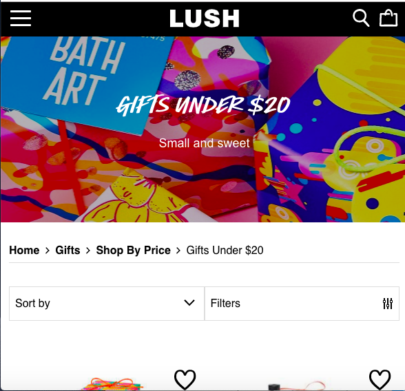

Alignment

Pinterest shows really well=placed alignment between all of its images and content. I find pinterest is always very visually pleasing, because of the way they place their content and the design principles they follow.
Repetition
BYU-Idaho
byui.eduRepetition is found all throughout the BYU-Idaho website. The blue coloring, fonts, and navigation all provide that effective repetition. It also helps the website feel organized and user friendly.
Contrast
Lush
lush.com
Lush, a natural beauty store does an amazing job of showing contrast on all it's pages. It does this mainly through it's images. The background to the website is always dark, but the vibrant and bright colors of their products really shows up and show contrast because of their site's coloring.